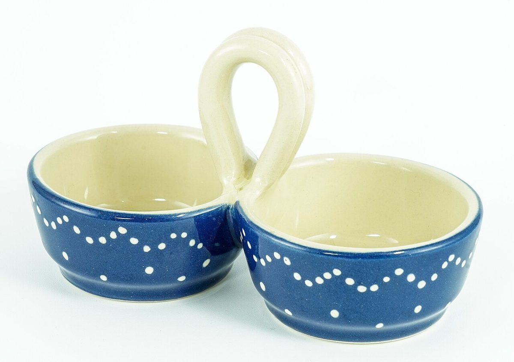

これは営業用の試作サイト(サンプル)です
掲載している写真はフリー素材のイメージです。店舗の実際の料理・店内・外観ではありません。日本以外や他の地域で撮影されたもの、撮影地が不明のものを含みます。
口コミ
以下は、サイトのイメージを伝えるために制作側が作成した例で、実際のお客様の声ではありません。
投稿者名・日付は付けていません。
イメージ例出かける前に、電話でちょっとした質問ができたらいいなと思います。
イメージ例Instagramを先に見てから、お店に行けたらうれしいです。

イメージ例ひと息つきたいとき、ふと思い出せるお店になったらいいなと思います。